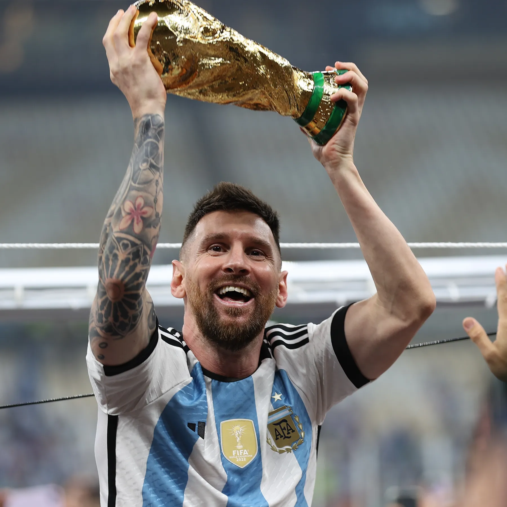

Lionel Messi: A Soccer Legend
Introduction
Lionel Messi is an Argentine soccer player known for his incredible dribbling, passing, and goal-scoring ability. He has played for major clubs such as Barcelona, Paris Saint-Germain, and Inter Miami.

Playing Style
Messi is famous for his close ball control, quick movement, accurate passing, and powerful finishing. His low center of gravity helps him change direction quickly and dribble past defenders.
Career Journey
Messi spent most of his career at Barcelona, where he became the club's top scorer. He later played for Paris Saint-Germain before joining Inter Miami in the United States.
Check out Messi's great achievementsLegendary Rivalry
Messi is often compared with Cristiano Ronaldo. Their rivalry has created one of the biggest debates in soccer history: who is the greatest player of all time?